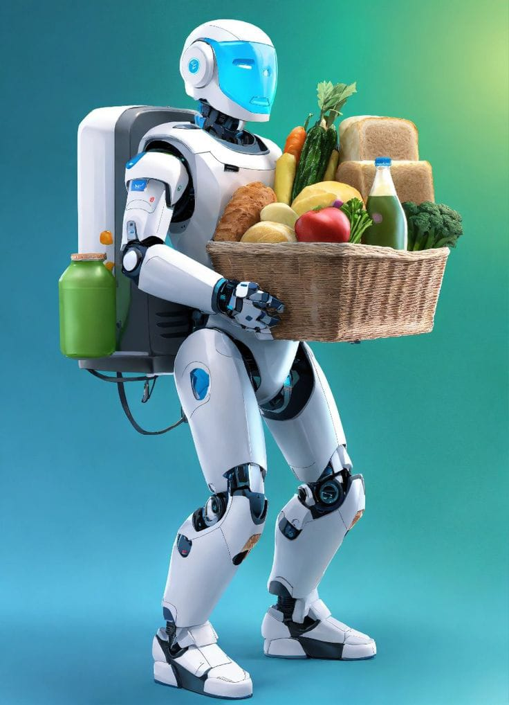
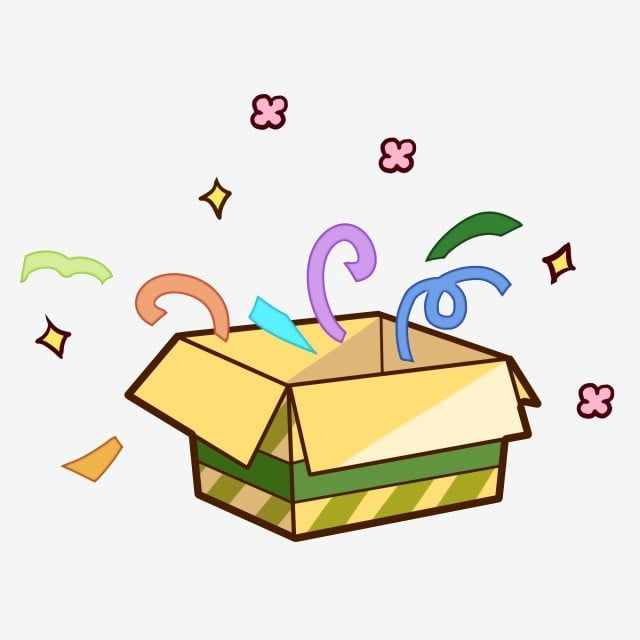

Bienvenidos a mi portafolio personal
Tengo 17 años, soy estudiante del CASD y me apasiona la electrónica y los videojuegos.
Tal vez se pregunten por qué tengo una foto de Eggman en mi portafolio. Eggman fue uno de los personajes que me inspiraron de pequeño a crear robots. No me importaba que fuera malo, lo que me importaba es que nunca se rendía: aunque le destruyeran sus robots, él seguía intentando. Por eso es mi ejemplo a seguir.
Me gusta disfrutar de un café en un día soleado ☕🌞 y también cocinar 👨🍳.
Soy fan de la saga de libros de Five Nights at Freddy’s (FNAF), porque cuentan historias diferentes a los juegos, llenas de misterio y emoción:
Los Ojos Plateados
Los Otros Animatrónicos
El Cuarto Armario
Un robot que ayude a cualquier persona que lo necesite, sin importar su estatus o sus capacidades.
Pensada para personas con Alzheimer o para quienes quieren revivir bellos recuerdos. Esta caja digital guarda fotos y momentos especiales.
📞 Teléfono: 333 6405384
📧 Correo: gomezsepulvedavladimir@gmail.com
TikTok: @userfhpe5kzamu
Instagram: @gomezsepulvedavladimir